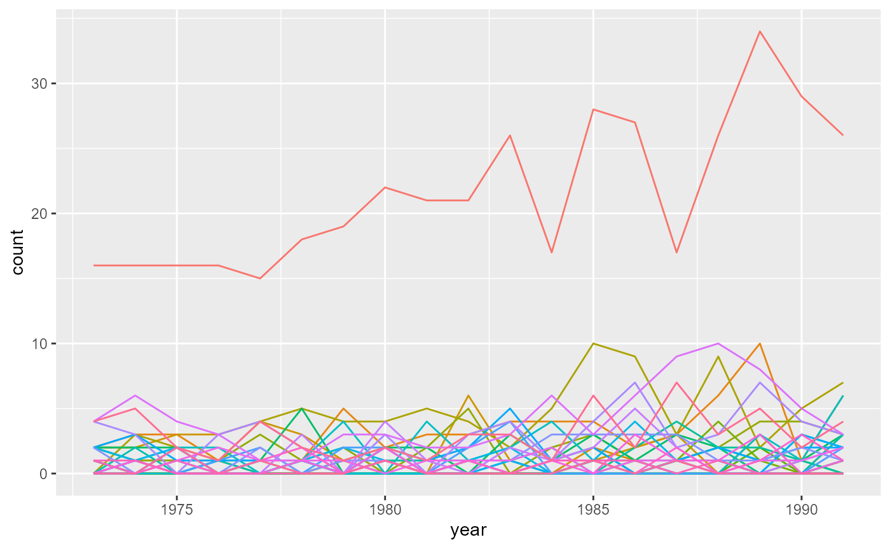

Process the brain cancer data
This file shows how to reshape the New Mexico brain cancer data from the R package rsatscan (Kleinman 2015) to a format suitable for the scanstatistics package.
We begin by loading the needed packages and the data, which comes as these three data frames:
-
NM_cas: contains the number of cancer cases per year, county, age group, and sex. Two counties are missing from this data frame:- Cibola: this county was split from Valencia in 1981, so cases in Cibola have been counted to Valencia in the data. Cibola is not present in the data frames below either.
- Harding: this county is present in the two other data frames. We will replace the case values in Harding with 0, which is the assumed number of cases since this county has such a small population.
-
NM_pop: with the exception of Cibola county, this data frame contains the population count for all counties, age groups, and gender category in the years 1973, 1982, and 1991. -
NM_geo: contains the longitude and latitude of each county’s seat (administrative center). Since the coordinates provided by thersatscanpackage is not in the needed format, we will grab the coordinates from this Wikipedia article instead, and replace this data frame.
knitr::opts_chunk$set(message = FALSE, warning = FALSE)
library(rsatscan)
library(data.table)
NM_pop <- as.data.table(rsatscan::NMpop)
NM_cas <- as.data.table(rsatscan::NMcas)To get more familiar with the counties of New Mexico, let’s plot them on a map:
library(ggplot2)
library(magrittr)
library(dplyr)
# Grab polygon data for plotting
NM_map <- map_data("county", "new mexico")
# Calculate geographical centroids from a polygon
# See: https://en.wikipedia.org/wiki/Centroid#Centroid_of_polygon
polygon_centroid <- function(x0, y0) {
x1 <- c(x0[-1], x0[1])
y1 <- c(y0[-1], y0[1])
A <- sum(x0 * y1 - x1 * y0) / 2
Cx <- sum((x0 + x1) * (x0 * y1 - x1 * y0)) / (6 * A)
Cy <- sum((y0 + y1) * (x0 * y1 - x1 * y0)) / (6 * A)
c(long = Cx, lat = Cy)
}
pgc <- function(df) polygon_centroid(as.numeric(df$long), as.numeric(df$lat))
centroids <- data.frame(subregion = unique(NM_map$subregion), long = NA, lat = NA)
# Calculate geographic centroids for each county
for (i in 1:nrow(centroids)) {
centroids[i, c("long", "lat")] <- NM_map %>%
filter(subregion == centroids$subregion[i]) %>%
pgc
}
# Plot map with labels at centroids
ggplot() +
geom_polygon(data = NM_map,
mapping = aes(x = long, y = lat, group = group),
color = "white", fill = "grey") +
geom_text(data = centroids,
mapping = aes(x = long, y = lat, label = subregion)) +
ggtitle("Counties of New Mexico") +
theme_bw()Before proceeding, we will make some changes to the data to ensure that the counties are named the same across all tables. The main functions of the scanstatistic package require locations to be encoded as integers. Thus we will make the county names into a factor variable, which are integer vectors with additional attributes. All levels of the factor should also be present in the data.
library(stringr)
# library(plyr, warn.conflicts = FALSE)
# This function corrects inconsistencies in the county names
format_counties <- function(x) {
x %>%
tolower %>%
str_replace_all(pattern = " ", replacement = "") %>%
str_replace_all(pattern = "ñ", replacement = "n") %>%
str_replace_all(pattern = "guadelupe", replacement = "guadalupe")
}
# Make the county factor variable
all_counties <- NM_map$subregion %>%
unique %>%
format_counties %>%
as.factor
# Character vector without Cibola county
counties <- levels(all_counties)[-which(levels(all_counties) == "cibola")]
# This function corrects inconsistencies in x and makes it into a factor
factorize_counties <- function(x, fac = counties) {
x %>%
format_counties %>%
factor(levels = c(fac, "cibola"))
}
# Fix inconsistencies and factorize counties in the data
centroids %<>%
mutate(county = format_counties(subregion),
county = factorize_counties(county),
center_long = long, center_lat = lat,
long = NULL, lat = NULL,
subregion = NULL)
NM_cas %<>% mutate(county = factorize_counties(county)) %>% as.data.table
NM_pop %<>% mutate(county = factorize_counties(county))
NM_map %<>% mutate(county = factorize_counties(subregion)) %>% as.data.table
NM_pop %<>% mutate(year = year + 1900) %>% as.data.tableScan statistics aim to find localized anomalies in the data, meaning that the locations and timepoints involved in the anomaly are close together in some way. In this example, we will use the geographic centroids (calculated above), but lots of other distance measures could work just as well. So let’s grab the coordinates of the county seats from Wikipedia and plot them. Kudos to Cory Nissen for this blogpost, which shows how to fetch data from a table on Wikipedia.
library(rvest)
# Function to clean table entries
clean_entry <- function(x) {
x %>%
gsub("\\d+♠", "", .) %>%
gsub("^[^\\(]+\\(", "", .) %>%
gsub("\\,", "", .) %>%
str_split(pattern = "[:blank:]") %>%
lapply(function(x) x[1]) %>%
unlist %>%
as.numeric
# gsub("\\ [:alpha:]+", "", .)
# gsub("\ km2\\)", "", .) %>%
# gsub("\ km²\\)", "", .)
}
# Grab the table from Wikipedia (as at 2022-04-15)
seat_url <- "https://en.wikipedia.org/wiki/List_of_counties_in_New_Mexico"
NM_geo <- seat_url %>%
read_html %>%
rvest::html_nodes(xpath = '//*[@id="mw-content-text"]/div/table[3]') %>%
html_table %>%
.[[1]] %>%
select(County, `County seat[3]`, `Pop.[6]`, `Area[3][7]`) %>%
rename(county = County,
seat = `County seat[3]`,
population = `Pop.[6]`,
`area(km2)` = `Area[3][7]`) %>%
mutate_at(.vars = c("population", "area(km2)"), .funs = clean_entry) %>%
mutate(county = gsub(" County", "", county)) %>%
mutate(county = factorize_counties(county, counties)) %>%
as.data.table
# Get the coordinates for the New Mexico county seats using ggmap::geocode
get_NM_longlat <- function(seats) {
suppressMessages({
res <- t(sapply(seats, function(x) t(ggmap::geocode(paste0(x, ", New Mexico")))))
})
data.frame(seat_long = res[, 1], seat_lat = res[, 2])
}
NM_geo <- cbind(NM_geo, get_NM_longlat(NM_geo$seat))
NM_geo <- merge(NM_geo, centroids, by = "county")
ggplot() +
geom_polygon(data = NM_map,
mapping = aes(x = long, y = lat, group = group),
color = "white", fill = "grey") +
geom_point(data = NM_geo,
mapping = aes(x = seat_long, y = seat_lat)) +
ggtitle("County seats of New Mexico") +
theme_bw()For the scan statistic functions in this package to work, locations and timepoints with zero counts must be filled in as such, and not left out. Thus, we will add the needed zeros to the case data. We will only consider the total number of cancer cases in each county and year, so we also take the oppotunity to aggregate the case counts over each age group and sex:
# Aggregate population and cases over sex and age group
NM_cas <- NM_cas[, .(count = sum(cases)), by = .(year, county)]
NM_pop <- NM_pop[, .(population = sum(population)), by = .(year, county)]
# Create the complete, sorted table of counties, years, age groups, and sex
combo_YC <- as.data.table(expand.grid(year = unique(NM_cas$year),
county = counties))
# Set keys for merge
setkeyv(NM_cas, c("year", "county"))
setkeyv(NM_pop, c("year", "county"))
setkeyv(combo_YC, c("year", "county"))
# Merge data
NM_cas <- merge(NM_cas, combo_YC, all = TRUE)
NM_pop <- merge(NM_pop, combo_YC, all = TRUE)
# Fill in zero case counts
NM_cas[is.na(count), count := 0]To demonstrate the scan statistic methods of this package, we will try to detect brain cancer clusters in the years 1986–1989, using data from the previous years to predict how many cancer cases we can expect to see if there is no anomalous increase in incidence. In this particular example, we want to use the available population size data as offsets to our predicted means, in order to properly compare the occurence of cancer in the different counties. Since the population counts are only available for three of the years, we will interpolate the population for the remaining years by fitting a quadratic function of time to the population data for each county after aggregating the number of cancer cases over age group and gender1. Though this leads to unrealistically smooth population changes, it is adequate for the purpose of demonstrating the functions in the scanstatistics package.
NM_pop[, population := as.numeric(population)]
# Interpolate county populations
for (s in counties) {
pop_mod <- lm(population ~ 1 + I(scale(year)) + I(scale(year)^2),
data = NM_pop[county == s, ])
pop_pred <- predict(pop_mod, NM_pop[is.na(population) & county == s, ],
type = "response")
NM_pop[is.na(population) & county == s, population := pop_pred]
}Finally, we join the population and case tables and plot how the number of cases evolve in each county over the years:
NM_popcas <- merge(NM_pop, NM_cas)
setkeyv(NM_popcas, c("county", "year"))
ggplot(NM_popcas) + geom_line(aes(x = year, y = count, color = county)) +
theme(legend.position = "none")
The data tables NM_popcas, NM_geo and NM_map are then saved as those available in the scanstatistics package, after converting them to data frames: